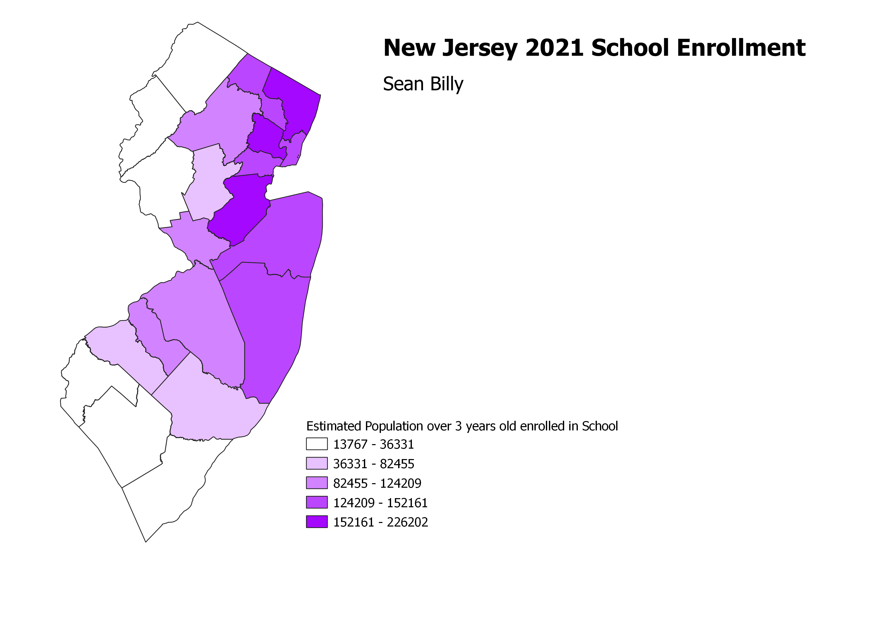

Homework 6: Census data choropleth
Sean Billy
A map of New Jersey counties by population over the age of 3 enrolled in schools. The data are just the total
number of students, so the map rougly shows the population of different counties, as larger counties will have
more students. If the data were a proportion of total population or school aged population, then the map could
be used to see if different counties have different rates of participation in schooling.

Data used for this project
CSV dataset
Link to shapefile